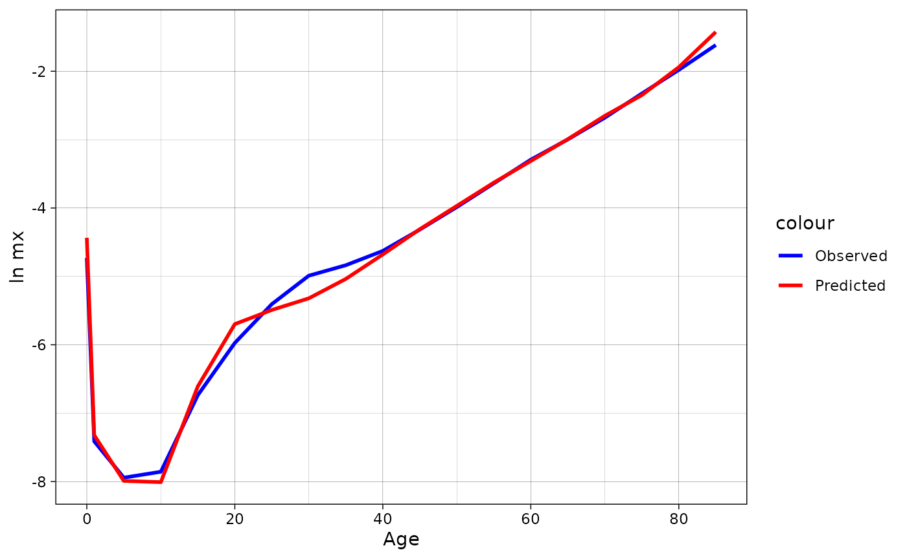

demor
demor.RmdGet ROSBRIS data
For getting data from RosBris
there is a function get_rosbris() that can download data on
mortality/fertility by 1/5-year age groups from 1989 to the last
available year (in 2023 its 2022).
Worth noting: downloading and preparing the final file can get some
time.
In the chunk below mortality data for 5-age groups with population in
“long” format is loading. For more function description use
?get_rosbris
library(demor)
dbm <- get_rosbris(
#mortality data
type = "m",
#what age group download
age = 5,
#to get "long" data
initial = F,
#last available year (the name of the downloading file contains years, so for the downloading the last year is required)
lastyear = 2022
)Lets see the data for Russia in 2010 for males and for total population (both urban and rural)
dbm[dbm$year==2010 & dbm$code==1100 & dbm$sex=="m" & dbm$territory=="t",]
#> year code territory sex age mx N Dx
#> 20445 2010 1100 t m 0 0.008823 869388 7670.61
#> 20446 2010 1100 t m 1 0.000604 3222450 1946.36
#> 20447 2010 1100 t m 5 0.000355 3613276 1282.71
#> 20448 2010 1100 t m 10 0.000387 3398894 1315.37
#> 20449 2010 1100 t m 15 0.001186 4353344 5163.07
#> 20450 2010 1100 t m 20 0.002546 6193325 15768.21
#> 20451 2010 1100 t m 25 0.004491 6002262 26956.16
#> 20452 2010 1100 t m 30 0.006808 5395865 36735.05
#> 20453 2010 1100 t m 35 0.007934 4973298 39458.15
#> 20454 2010 1100 t m 40 0.009782 4464789 43674.57
#> 20455 2010 1100 t m 45 0.013354 5140274 68643.22
#> 20456 2010 1100 t m 50 0.018567 5207919 96695.43
#> 20457 2010 1100 t m 55 0.026250 4333619 113757.50
#> 20458 2010 1100 t m 60 0.037143 3117320 115786.62
#> 20459 2010 1100 t m 65 0.049925 1573662 78565.08
#> 20460 2010 1100 t m 70 0.068599 2149929 147482.98
#> 20461 2010 1100 t m 75 0.097635 1077916 105242.33
#> 20462 2010 1100 t m 80 0.138043 714191 98589.07
#> 20463 2010 1100 t m 85 0.198593 231350 45944.49Mortality
Life table
Now one can create life table based on gotten data for
2010-Russia using LT().
Note, \(a_x\) for age 0 is modeled as
in Andreev & Kingkade (2015).
rus2010 <- dbm[dbm$year==2010 & dbm$code==1100 & dbm$sex=="m" & dbm$territory=="t",]
LT(
age = rus2010$age,
sex = "m",
#age specific mortality rates
mx = rus2010$mx)
#> age mx ax qx lx dx Lx Tx ex
#> [1,] 0 0.00882 0.132 0.00876 1.00000 0.00876 0.99240 63.03477 63.03
#> [2,] 1 0.00060 0.500 0.00241 0.99124 0.00239 3.96019 62.04238 62.59
#> [3,] 5 0.00036 0.500 0.00177 0.98885 0.00175 4.93988 58.08218 58.74
#> [4,] 10 0.00039 0.500 0.00193 0.98710 0.00191 4.93072 53.14231 53.84
#> [5,] 15 0.00119 0.500 0.00591 0.98519 0.00582 4.91139 48.21159 48.94
#> [6,] 20 0.00255 0.500 0.01265 0.97937 0.01239 4.86586 43.30020 44.21
#> [7,] 25 0.00449 0.500 0.02221 0.96698 0.02147 4.78120 38.43434 39.75
#> [8,] 30 0.00681 0.500 0.03347 0.94550 0.03165 4.64841 33.65314 35.59
#> [9,] 35 0.00793 0.500 0.03890 0.91386 0.03555 4.48042 29.00473 31.74
#> [10,] 40 0.00978 0.500 0.04774 0.87831 0.04193 4.28672 24.52431 27.92
#> [11,] 45 0.01335 0.500 0.06461 0.83638 0.05404 4.04679 20.23759 24.20
#> [12,] 50 0.01857 0.500 0.08872 0.78234 0.06941 3.73817 16.19080 20.70
#> [13,] 55 0.02625 0.500 0.12317 0.71293 0.08781 3.34513 12.45263 17.47
#> [14,] 60 0.03714 0.500 0.16994 0.62512 0.10623 2.86003 9.10751 14.57
#> [15,] 65 0.04992 0.500 0.22193 0.51889 0.11516 2.30657 6.24748 12.04
#> [16,] 70 0.06860 0.500 0.29278 0.40374 0.11821 1.72316 3.94091 9.76
#> [17,] 75 0.09764 0.500 0.39240 0.28553 0.11204 1.14754 2.21775 7.77
#> [18,] 80 0.13804 0.500 0.51313 0.17349 0.08902 0.64489 1.07021 6.17
#> [19,] 85 0.19859 5.035 1.00000 0.08447 0.08447 0.42532 0.42532 5.04Note, from life table one can compute other functions (not
just \(e_x\) or \(l_x\)):
1. \(CDR = \frac{1}{e_0}\) or Death
rate above some age \(x:
\frac{1}{e_x}\).
2. Probability of surviving from age \(x\) to age \(y\): \(p=\frac{l_y}{l_x}\).
3. Probability that a newborn will die between ages \(x\) and \(x+n\): \(\frac{d_x^n}{l_0}\).
4. Probability that a newborn will die between ages \(x\) and \(y\): \(\frac{l_x-l_y}{l_0}\).
5. Life course ratio from age \(x\) to
\(y\) that is the fraction of
person-years lived from age \(x\)
onward: \(\frac{T_y}{T_x}\).
Human Life Indicator (HLI)
A good alternative to the human development indicator (HDI) is the human life indicator (HLI) proposed by Ghislandi, Sanderson and Scherbov (2019). It requires just \(m_x\) (and it is based on life table). Lets calculate it using our example data:
hli(
age = rus2010$age,
sex = "m",
mx = rus2010$mx)
#> [1] 55.19236Years of Life Lost (YLL)
One of the most popular (and relatively young) measure of lifespan inequality is “years of life lost” (YLL) proposed by Martinez et al. (2019). As authors claim, “YLL is a valuable measure for public health surveillance, particularly for quantifying the level and trends of premature mortality, identification of leading causes of premature deaths and monitoring the progress of YLL as a key indicator of population health” (ibid., 1368).
Authors proposed different metrics of YLL:
1. Absolute number of YLL: \[YLL_{x,t,c}=D_{x,t,c}*SLE_x\] that is
calculated for age x, time t and cause of death
c. YLL for the whole population is just sum of \(YLL_x\). SLE is the standard
life expectancy that is invariant over time, sex and population
(it’s meaning is straightforward: it is the potential maximum life span
of an individual, who is not exposed to avoidable health risks or severe
injuries and receives appropriate health services), and \(D_x\) is a number of deaths at age
x. Of course, one can calculate YLL not for specific
cause c, but for overall mortality that is called
all-causes YLL.
2. YLL as proportion: \[YLL^p_{x,t,c}=YLL_{x,t,c}/YLL_{x,t}\] that
is just cause specific YLL divided by all-causes
YLL.
3. YLL rate: \[YLL^r_{x,t,c}=[YLL_{x,t,c}/P_{x,t}] *
100'000\] where \(P_{x,t}\)
is population.
4. Age-standardized YLL rate: \[ASYR_{x,t,c} =
\sum_x^\omega{[YLL^r_{x,t,c}*W_x]}\] where \(W_x\) is the standard population weight at
age x, where \(\omega\) is the
oldest, closing age (for ex., 85+ or 100+). In other words, it’s just
direct standardization of \(YLL^r_{x,t,c}\).
Let’s calculate all-cause YLL, Yll rate and ASYR using Rosbris data that we have downloaded.
#YLL
yll(rus2010$Dx, type = "yll")
#> $yll_all
#> [1] 33640561
#>
#> $yll
#> [1] 705159.2 174024.0 108414.6 104611.4 384855.2 1096994.4 1741367.9
#> [8] 2190511.0 2157177.1 2171936.4 3075902.7 3860081.6 3989475.5 3502545.3
#> [15] 2002623.9 3063221.5 1729131.5 1233349.3 349178.1
#YLL rate
yll(rus2010$Dx, type = "yll.r", pop = rus2010$N)
#> $yll.r_all
#> [1] 50945.02
#>
#> $yll.r
#> [1] 81109.836 5400.365 3000.453 3077.806 8840.451 17712.527
#> [7] 29011.861 40596.105 43375.182 48645.890 59839.275 74119.462
#> [13] 92058.751 112357.578 127258.833 142480.124 160414.307 172691.796
#> [19] 150930.678For ASYR one needs standard population. Let’s use 2010 population as standard (note, in this case ASYR equals YLL rate because we use 2010 mortality).
#ASYR
yll(rus2010$Dx, type = "asyr", pop = rus2010$N, w = rus2010$N/sum(rus2010$N))
#> $asyr
#> [1] 1067.8879 263.5407 164.1824 158.4227 582.8220 1661.2803 2637.1149
#> [8] 3317.2939 3266.8132 3289.1646 4658.1245 5845.6793 6041.6326 5304.2289
#> [15] 3032.7590 4638.9202 2618.5841 1867.7751 528.7928
#>
#> $asyr_all
#> [1] 50945.02Also one can calculate different YLL measures using
standards that are provided by demor as dataframe.
demor::sle_standAge decomposition of differences in life expectancies
Also one can do simple decomposition between 2 populations. Lets use Russia-2000 as base population and Russia-2010 as compared population
rus2010 <- dbm[dbm$year==2010 & dbm$code==1100 & dbm$sex=="m" & dbm$territory=="t",]
rus2000 <- dbm[dbm$year==2000 & dbm$code==1100 & dbm$sex=="m" & dbm$territory=="t",]
dec <- decomp(mx1 = rus2000$mx,
mx2 = rus2010$mx,
sex = "m",
age = rus2000$age,
method = "andreev")
dec
#> age ex1 ex2 lx2 dex ex12 ex12_prc
#> 1 0 58.98 63.03 1.00000 4.05 0.53 13.0221130
#> 2 1 59.04 62.59 0.99124 3.55 0.11 2.7027027
#> 3 5 55.29 58.74 0.98885 3.45 0.07 1.7199017
#> 4 10 50.45 53.84 0.98710 3.39 0.05 1.2285012
#> 5 15 45.59 48.94 0.98519 3.35 0.21 5.1597052
#> 6 20 41.05 44.21 0.97937 3.16 0.45 11.0565111
#> 7 25 37.01 39.75 0.96698 2.74 0.26 6.3882064
#> 8 30 33.06 35.59 0.94550 2.53 0.03 0.7371007
#> 9 35 29.15 31.74 0.91386 2.59 0.15 3.6855037
#> 10 40 25.40 27.92 0.87831 2.52 0.29 7.1253071
#> 11 45 21.90 24.20 0.83638 2.30 0.37 9.0909091
#> 12 50 18.71 20.70 0.78234 1.99 0.38 9.3366093
#> 13 55 15.82 17.47 0.71293 1.65 0.34 8.3538084
#> 14 60 13.24 14.57 0.62512 1.33 0.26 6.3882064
#> 15 65 10.93 12.04 0.51889 1.11 0.22 5.4054054
#> 16 70 8.88 9.76 0.40374 0.88 0.17 4.1769042
#> 17 75 7.12 7.77 0.28553 0.65 0.06 1.4742015
#> 18 80 5.47 6.17 0.17349 0.70 0.05 1.2285012
#> 19 85 4.16 5.04 0.08447 0.88 0.07 1.7199017Than let us plot the result of decomp using R basic
plot.
barplot(height=dec$ex12,
names=dec$age,
xlab="Age-groups",
ylab="Сontribution to the e0 difference")Or using ggplot2
library(ggplot2)
ggplot(dec, aes( as.factor(age), ex12))+
geom_bar(stat = "identity", color = "black", fill = "orange3")+
theme_minimal()+
labs(x = "Age-groups",
y = "Сontribution to the e0 difference")+
annotate("text", x = "70", y = 0.5, label = paste0("Total difference in e0: ", sum(dec$ex12)))+
geom_text(aes(label = ex12), vjust = 1.5, color = "white", size = 3.5)Age and cause decomposition of differences in life expectancies
Also one can do decomposition between 2 populations by
age and causes. Lets use example from Andreev &
Shkolnikov spreadsheet
where data for US and England and Wales men mortality by some causes are
presented.
Lets see the data
data("mdecompex")
head(mdecompex)
#> # A tibble: 6 × 9
#> age neoplasms circulatory respiratory digestive accident other all
#> <dbl> <dbl> <dbl> <dbl> <dbl> <dbl> <dbl> <dbl>
#> 1 0 0.0000349 0.000173 0.000188 0.000151 0.000377 0.00669 7.62e-3
#> 2 1 0.0000309 0.0000155 0.0000220 0.00000930 0.000163 0.000112 3.53e-4
#> 3 5 0.0000313 0.00000560 0.00000687 0.00000324 0.0000792 0.0000409 1.67e-4
#> 4 10 0.0000305 0.0000127 0.00000896 0.00000286 0.000127 0.0000490 2.31e-4
#> 5 15 0.0000424 0.0000322 0.0000141 0.00000401 0.000765 0.0000821 9.40e-4
#> 6 20 0.0000600 0.0000511 0.0000158 0.00000928 0.00114 0.000130 1.41e-3
#> # ℹ 1 more variable: cnt <chr>For mdecomp 2 lists with arrays for 2 population are
required.
#US men
mx1 <- list(all = mdecompex[mdecompex$cnt=="usa",]$all,
neoplasm = mdecompex[mdecompex$cnt=="usa",]$neoplasms,
circulatory = mdecompex[mdecompex$cnt=="usa",]$circulatory,
respiratory = mdecompex[mdecompex$cnt=="usa",]$respiratory,
digestive = mdecompex[mdecompex$cnt=="usa",]$digestive,
accident = mdecompex[mdecompex$cnt=="usa",]$accident,
other = mdecompex[mdecompex$cnt=="usa",]$other)
#England and Wales men
mx2 <- list(all = mdecompex[mdecompex$cnt=="eng",]$all,
neoplasm = mdecompex[mdecompex$cnt=="eng",]$neoplasms,
circulatory = mdecompex[mdecompex$cnt=="eng",]$circulatory,
respiratory = mdecompex[mdecompex$cnt=="eng",]$respiratory,
digestive = mdecompex[mdecompex$cnt=="eng",]$digestive,
accident = mdecompex[mdecompex$cnt=="eng",]$accident,
other = mdecompex[mdecompex$cnt=="eng",]$other)
decm <- mdecomp(mx1 = mx1,
mx2 = mx2,
sex = "m",
age = unique(mdecompex$age)
)
head(decm)
#> age ex12 neoplasm circulatory respiratory digestive accident
#> 1 0 0.12 0.0008745885 6.544742e-03 0.0038965543 6.616401e-03 0.02107294
#> 2 1 0.03 -0.0025030458 5.483996e-04 0.0020247182 6.245908e-04 0.03637029
#> 3 5 0.02 -0.0016468368 8.262058e-05 -0.0001300012 9.929857e-05 0.02178479
#> 4 10 0.01 -0.0014084238 4.993427e-04 -0.0002451017 8.338450e-05 0.01117647
#> 5 15 0.13 -0.0032690840 2.657675e-03 0.0005053688 -2.052103e-04 0.13796276
#> 6 20 0.17 -0.0009648903 2.773336e-03 -0.0016773417 -8.983808e-04 0.18353643
#> other
#> 1 0.0809947781
#> 2 -0.0070649563
#> 3 -0.0001898743
#> 4 -0.0001056675
#> 5 -0.0076515085
#> 6 -0.0127691565Than let us plot the result of mdecomp using ggplot2. This requires
some data transformations
library(ggplot2)
decm_plot <- decm[,c(1,3)]
decm_plot$group = colnames(decm)[3]
colnames(decm_plot)[2]<-"ex12"
for(i in 4:ncol(decm)){
decm_plot_i <- decm[,c(1,i)]
decm_plot_i$group = colnames(decm)[i]
colnames(decm_plot_i)[2]<-"ex12"
decm_plot <- rbind(decm_plot,decm_plot_i)
rm(decm_plot_i)
}
for (i in unique(decm_plot$group)){
decm_plot[decm_plot$group==i,]$group <- paste0(i, " (", round(sum(decm_plot[decm_plot$group==i,]$ex12),2), ")")
}
ggplot(data = decm_plot, aes(x = as.factor(age), y = ex12, fill = group))+
geom_bar(stat="identity", colour = "black")+
theme_minimal()+
scale_fill_brewer(palette="Set1")+
labs(x = "Age", y = "Contribution to difference in ex", fill = "Cause (contribution):",
caption = paste0("Total difference in ex = ", sum(decm[,2]))
)
Lee-Carter model
Also in the demor there is leecart()
function that provides users with basic Lee-Carter model
(proposed by Lee and Carter in 1992 and that now has a lot of
extensions) for mortality forecasting:
leecart_forecast <- leecart(data = dbm[dbm$code==1100 & dbm$territory=="t" & dbm$sex=="m" & dbm$year %in% 2004:2019,c("year", "age", "mx")],
n = 10,
sex = "m",
concise = T
)
head(leecart_forecast)
#> year age mx mx_low95 mx_high95 ex ex_low95 ex_high95
#> 1 2020 0 0.0052050868 0.0049297552 0.0054957958 68.54 67.99 69.08
#> 2 2020 1 0.0003032973 0.0002852915 0.0003224396 67.89 67.36 68.42
#> 3 2020 10 0.0002669130 0.0002568045 0.0002774194 63.97 63.45 64.50
#> 4 2020 15 0.0007304609 0.0006953816 0.0007673099 59.06 58.53 59.58
#> 5 2020 20 0.0013011257 0.0012188971 0.0013889016 54.26 53.75 54.78
#> 6 2020 25 0.0019688556 0.0018300568 0.0021181815 49.60 49.10 50.10One can plot the results using ggplot2:
ggplot(data = leecart_forecast[leecart_forecast$age=="0",], aes(year, ex))+
geom_line()+geom_ribbon(aes(ymin = ex_low95, ymax = ex_high95), alpha = 0.3, fill = "red")+
theme_classic()
ggplot(data = leecart_forecast, aes(as.numeric(age), log10(mx), color = as.factor(year)))+
geom_line()+geom_ribbon(aes(ymin = log10(mx_low95), ymax = log10(mx_high95)), alpha = 0)+
theme_classic()Associated single decrement life table
There is asdt() function that calculates associated
single decrement life table (ASDT) for causes of death
(cause-deleted life table). In other words, by this function
one can answer the question “what will be the life expectancy if there
is no mortality from cause i?”
For example in the demor data (as it is easy to guess,
taken from Andreev & Shkolnikov spreadsheet)
on mortality of US men in 2002 by some causes is added. Let me show what
would be \(e_x\) if there is no deaths
from neoplasm (i)
data("asdtex")
asdt_neoplasm <- asdt(age = asdtex$age,
sex = "m",
m_all = asdtex$all,
m_i = asdtex$neoplasms,
full = F,
method = "chiang1968")
asdt_neoplasm[,c("age", "ex", "ex_without_i")]
#> age ex ex_without_i
#> 1 0 74.65 78.58
#> 2 1 74.22 78.18
#> 3 5 70.32 74.28
#> 4 10 65.38 69.33
#> 5 15 60.45 64.39
#> 6 20 55.72 59.67
#> 7 25 51.10 55.06
#> 8 30 46.43 50.39
#> 9 35 41.75 45.72
#> 10 40 37.16 41.13
#> 11 45 32.70 36.64
#> 12 50 28.39 32.26
#> 13 55 24.25 27.98
#> 14 60 20.32 23.82
#> 15 65 16.69 19.84
#> 16 70 13.40 16.12
#> 17 75 10.51 12.75
#> 18 80 8.07 9.81
#> 19 85 6.15 7.32One can plot the results using ggplot2:
library(ggplot2)
ggplot(data = asdt_neoplasm, aes(x = age))+
geom_line(aes(y = ex, color = "ex"), size = 1)+
geom_line(aes(y = ex_without_i, color = "ex without neoplasms"), size = 1)+
theme_minimal()
ggplot(data = asdt_neoplasm, aes(x = age))+
geom_line(aes(y = lx, color = "ex"), size = 1)+
geom_line(aes(y = l_not_i, color = "ex without neoplasms"), size = 1)+
geom_hline(yintercept = 0.5, linetype = "dashed")+
theme_classic()
Fertility
For the analysis of fertility in the demor there are
only a few (1…) functions, due to the author’s preference for mortality
analysis…
TFR
Lets get basic fertility data (asFR or \(f_x\)) from RosBris
using get_rosbris()
dbf <- get_rosbris(
#fertility data
type = "f",
#what age group download
age = 5,
#to get "long" data
initial = F,
#last available year
lastyear = 2022
)For the example Russia-2010 is gotten
rus2010f <- dbf[dbf$year==2010 & dbf$code==1100 & dbf$territory=="t",]
rus2010f
#> year code territory age fx N Bx
#> 3153 2010 1100 t 15 0.027015 4214250 113847.96
#> 3154 2010 1100 t 20 0.087421 6027079 526893.27
#> 3155 2010 1100 t 25 0.099061 5957982 590203.65
#> 3156 2010 1100 t 30 0.067240 5515957 370892.95
#> 3157 2010 1100 t 35 0.029922 5187670 155225.46
#> 3158 2010 1100 t 40 0.005904 4764028 28126.82
#> 3159 2010 1100 t 45 0.000257 5738736 1474.86
#> 3160 2010 1100 t 50 0.000014 6203597 86.85Now one can compute TFR:
tfr(
#asFR
rus2010f$fx,
#age interval
age.int = 5
)
#> [1] 1.58417Other functions
Also in the demor there are some additional
functions.
One of them is plot_pyr that plots population pyramid using
ggplot2
Lets create population pyramid using midyear population from Rosbris
mortality data. We already have data in dbm.
plot_pyr(
popm = dbm[dbm$year==2010 & dbm$code==1100 & dbm$territory=="t" & dbm$sex=="m",]$N,
popf = dbm[dbm$year==2010 & dbm$code==1100 & dbm$territory=="t" & dbm$sex=="f",]$N,
ages = dbm[dbm$year==2010 & dbm$code==1100 & dbm$territory=="t" & dbm$sex=="f",]$age)
Also one can redesigned plot using ggplot2 functions:
plot <-
plot_pyr(
popm = dbm[dbm$year==2010 & dbm$code==1100 & dbm$territory=="t" & dbm$sex=="m",]$N,
popf = dbm[dbm$year==2010 & dbm$code==1100 & dbm$territory=="t" & dbm$sex=="f",]$N,
ages = dbm[dbm$year==2010 & dbm$code==1100 & dbm$territory=="t" & dbm$sex=="f",]$age)
plot +
labs(y = "My y", x = "Age")+
theme_minimal()
References
- Center for Demographic Research, Moscow (Russia). 2023. “Russian
Fertility and Mortality Database (Rosbris)” URL
- Andreev, E. M., & Kingkade, W. W. (2015). Average age at death
in infancy and infant mortality level: Reconsidering the Coale-Demeny
formulas at current levels of low mortality. Demographic Research, 33,
363-390.
- Ghislandi, S., Sanderson, W. C., & Scherbov, S. (2019). A simple
measure of human development: The human life indicator. Population and
development review, 45(1), 219.
- Andreev, E. M., & Shkolnikov, V. M. (2012). An Excel spreadsheet
for the decomposition of a difference between two values of an aggregate
demographic measure by stepwise replacement running from young to old
ages. MPIDR Technical Report TR-2012-002. URL
- Lee, R. D., & Carter, L. R. (1992). Modeling and forecasting US mortality. Journal of the American statistical association, 87(419), 659-671.